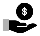

Inverted surface — the evidenced CTA-banner treatment, not a fabricated dark mode
Inverted surface — the evidenced CTA-banner treatment, not a fabricated dark mode
Tab to any button above — the same --focus-ring token (§2.3) renders at
full contrast against navy, since it reuses brand-blue rather than a lighter tint.
The iconset's dark ink fills disappear on navy directly — plated on white here, matching the text-overlay contrast rule (never dark-on-dark).
